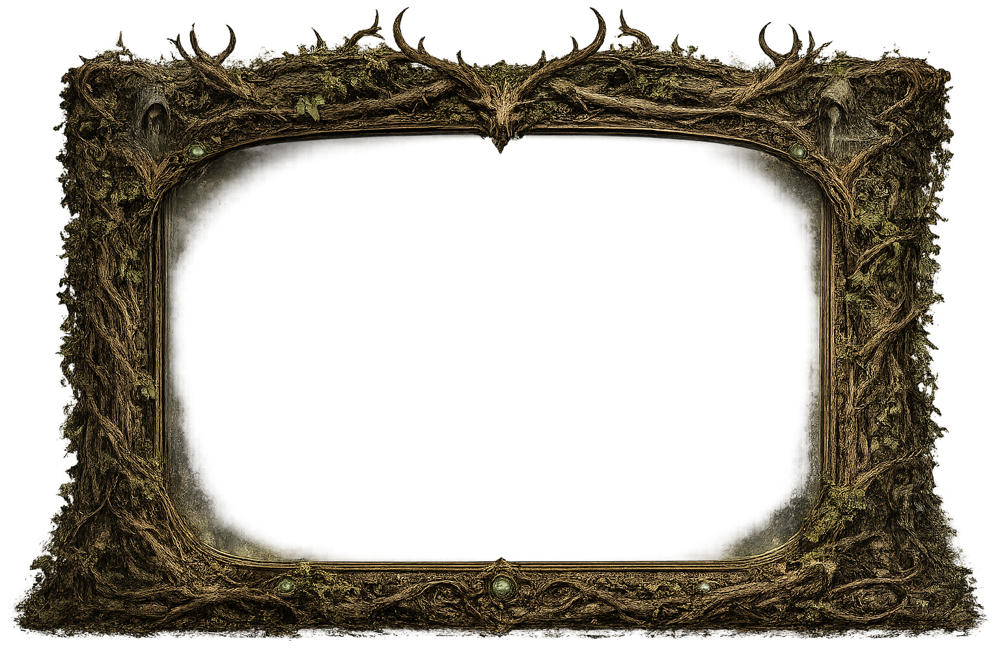

Talvaren Media
Every vision preserved within these archives marks another step in Talvaren's journey. Gameplay footage, world exploration, and captured moments are recorded here as the world continues to grow.


Every vision preserved within these archives marks another step in Talvaren's journey. Gameplay footage, world exploration, and captured moments are recorded here as the world continues to grow.
